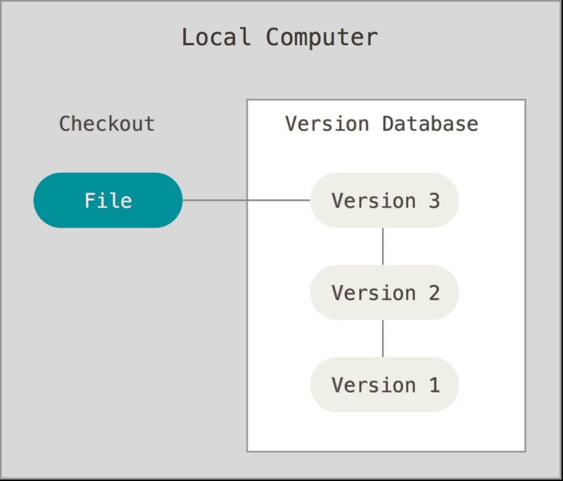
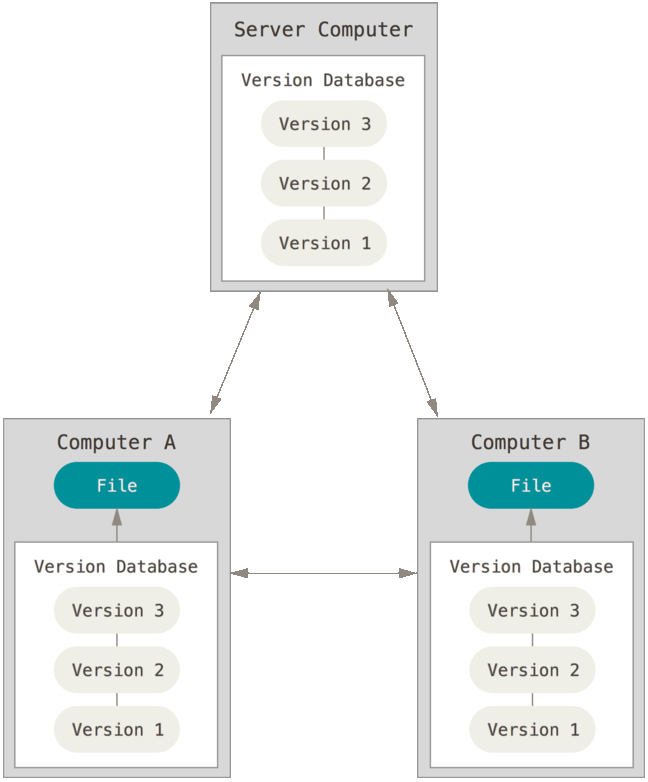

Git : Philosophy
The story
1991: Linus Torvalds create Linux
- 1991-2002: tarballs and patches
- 2002: start using proprietary DVCS BitKeeper
- 2005: Relations houleuse entre la communauté Linux et la société BitKeeper
- Révocation de la gratuité accordé au projet Linux
- Linus Torvalds à décider de stopper le développement de Linux jusqu'à trouver un remplaçant à BitKeeper
- Veille technologique
How save datas
- zipped / copy
- Version Control systems (VCS)
Local Version Control Systems
- Free/Open-source: SCCS (1972), RCS (1982)
- Proprietary: PVCS (1985), QVCS (1991)
- https://en.wikipedia.org/wiki/Version_control
Central Version Control Systems

- Free/Open-source: CVS (1986), Subversion/SVN (2000)...
- Proprietary: perforce (1995), ClearCase (1992)...
- https://en.wikipedia.org/wiki/Version_control
Distributed Version Control Systems
- Free/Open-source: Mercurial (2005), Git (2005), Bazzar (2005)...
- Proprietary: BitKeeper (2000), Team Foundation Server (2013)...
- https://en.wikipedia.org/wiki/Version_control
The story
1991: Linus Torvalds create Linux
- 1991-2002: tarballs and patches
- 2002: start using proprietary DVCS BitKeeper
- 2005: Relations houleuse entre la communauté Linux et la société BitKeeper
- Révocation de la gratuité accordé au projet Linux
- Linus Torvalds à décider de stopper le développement de Linux jusqu'à trouver un remplaçant à BitKeeper
- Veille technologique
What is the Linus conclusion ?
Make a new software from scratch
What now
Goals
- fast
- simple design
- support nonlinear developments (Thousands of branches)
- fully distributed
- ability to effectively manage large projects (speed and compactness of data)
- Trusty
Benefits of Distributed Version Control
- Can collaborate without a central authority
- Disconnected operations
- Easy branching and merging
- Define your own workflow
- Powerful community sharing tools
- Easier path to contributor to commiter
- Not have a single point of failure
Also
- Forget what you know about VCS
- Linus has no brain dammages by 30 years of VCS practice
- Git is like a minimalistic filesystem with very powerfull tools built on it
Git Basics - Snapshots, Not Differences
other VCS

Git

Git Basics - Nearly Every Operation Is Local
- complete history
- no network transaction
- so it's fast
Git Basics - Git has Integrity
- everything in Git is checksummed
- SHA-1 hash: This is a 40-character string (hexadecimal)
24b9da6552252987aa493b52f8696cd6d3b00373 - Git stores everthing in its database by the hash value of its contents
Git Basics - Git generally only adds data
- nearly all actions in Git only add data to the Git database
- So nearly all done on git are undoable
Git Basics - The Three States

- commmited
- modified
- staged
Git vs SVN
Distributed Git - Distributed Workflows
Centralized Workflow

Distributed Git - Distributed Workflows
Integration Manager Workflow

Distributed Git - Distributed Workflows
Dictator and Lieutenants workflow

Distributed Git - Distributed Workflows
More
- Branch Workflow by Fonctionality
- Workflow Gitflow https://datasift.github.io/gitflow/IntroducingGitFlow.html
- Full Distributed
- Forking Workflow - Pull Request
- ...
Even More with third tools
- Gerrit
- Jenkins
Git Hosted Service
- GitHub
- Gitlab
- Bitbucket (Atlassian)
- Coding
Start using Git
Command line vs Gui
- Command line: the only place you can run all Git commands
- Gui: implement only partial subset of Git functionality
- Swithing to gui from command line is easier, the opposite not
- Gui: matter of personal taste
Most known Gui
free/open-source
- git-gui (built-in)
- gitk (built-in)
- tig
- tortoiseGit
- ...
proprietary
- GitKraken
- SmartGit
- ...
Many target
- GNU/Linux
- Windows
- Mac
- Android
- iOS
First use
Installation
$ apt-get install git-all
Configuration
git config: get and set configuration variables that contol all aspects of how Git looks and operates
These variables can be stored in 3 different places:
- system:
/etc/gitconfig - global:
~/.gitconfig - local:
.git/config
$ git config --global user.name "John Doe"
$ git config --global user.email "john.doe@sample.com"
$ git config --global core.editor.vim"
$ git config --list"
$ git config user.name"
First use
Help
$ git help <commande>
$ git <commande> --help
$ man git-<commande>
Start a new repository
$ git init
$ git add <files>
$ git commit -m "initial project version"
Clone an existing repository
$ git clone https://github.com/foo/bar
bar
$ git clone --bare https://github.com/foo/bar
bar.git
$ git clone https://github.com/foo/bar myOwnTitleBar
myOwnTitleBar
Clone from where: Available transfert protocols:
ssh://
git://
http://
https://
file://
common alias
[alias]
ci = commit
co = checkout
st = status
br = branch
staged = diff --cached
unstaged = reset HEAD --
fix = commit --amend --no-edit # just add add index to previous ci
fixe = commit --amend # fix & e(dit)
cleanall = clean -fd
tip = log -n 1 --abbrev-commit --decorate
glog = log --oneline --decorate --graph
glogs = log --decorate --graph --all -5
glogf = log --oneline --decorate --graph --all
glogd = log --oneline --decorate --graph --all --date-order
Basis commands
git addgit commitgit statusgit loggit showgit checkoutgit diffgit remotegit fetchgit pullgit branchgit taggit mergegit rebasegit cherry-pickgit stashgit mvgit rm
Other commands
git grepgit bisectgit format-patchgit applygit revertgit blamegit clean
Questions ?
Références
Git
Pro git
Tech Talk: Linux Torvalds on git (2007)
/